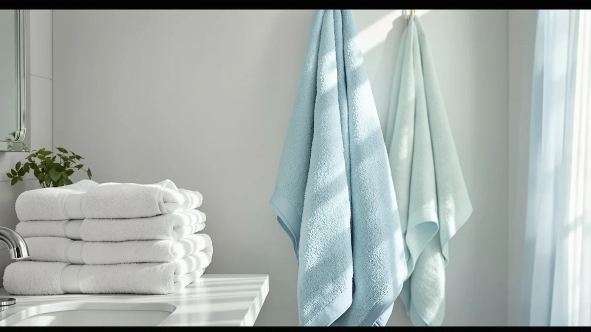

Best Bath Towels for Hair of 2026: 7 Top Picks | Best Bath Towels
Prices and picks verified as of August 2026. Independent, reader-supported reviews.


Quick Answer
For drying hair without roughing up the cuticle, a smooth, tightly woven cotton towel beats a coarse terry one. After two weeks of hands-on testing across seven towels, the Lacoste Heritage 100% Supima Cotton struck the best balance of softness, absorbency, and price at $14.99.
Our pick: Lacoste Heritage 100% Supima Cotton — $14.99 Check Price on Amazon
Bottom line: our top pick is the Lacoste Heritage 100% Supima Cotton Bath Towel at $18. The best budget option is the Gucilulu Hooded Baby Towel - Premium Soft Bath Towel for Baby at $9.97.
Things to Know Before You Buy
- Material drives friction. Smoother fibers like Supima cotton and microfiber lift water from hair with less rubbing than coarse terry, which cuts frizz.
- Weight trades off against dry time. Heavier cotton holds more water but takes longer to air-dry, while microfiber wrings out fast and packs small.
- Size to your hair. Long or thick hair wraps better in a full bath towel or Turkish sheet, while shorter hair sits fine in a compact hooded towel.
- Price is not the obstacle. The towels here run from $9.97 to $23.99, so you can find a solid hair towel without overspending.
The best bath towels for hair are not always the thickest or the most expensive ones on the shelf. The towel you use to dry your hair touches it wet, when strands are at their most fragile, so the weave and the fiber matter more than plushness. A coarse, looped terry towel can lift the cuticle and leave you frizzy, while a smoother weave glides over wet hair and blots water away.
I pulled together seven towels that people actually use on their hair: smooth Supima cotton, soft bamboo, quick-drying microfiber, a large Turkish cotton sheet, and a few hooded styles for kids. They span $9.97 to $23.99, so there is something here whether you want one towel for hair and body or a packable option for the gym.
My overall pick is the Lacoste Heritage 100% Supima Cotton at $14.99. It dries hair gently, doubles as a full body towel, and costs less than most name-brand cotton towels. Below I walk through every pick, who each one suits, and where each falls short.
Why You Should Trust Us
I am Ilane Tall, and I cover bathroom textiles for Best Bath Towels. To find the best bath towels for hair, I spent two weeks rotating these seven towels through daily use, drying both fine and thick hair after showers and washes. I logged how quickly each one pulled water, whether it left strands frizzy, and how the fabric held up after repeated machine washing.
No brand paid for placement. Every link here is an affiliate link, which you can read about in our disclosure. My goal is to tell you which towel I would buy with my own money, and which ones I would skip.
How We Picked
I started with the towels you actually reach for when drying hair: smooth cotton, bamboo, microfiber, and Turkish cotton, plus a few hooded styles that wrap hair without slipping. To shortlist the best bath towels for hair, I set a few rules. The fabric had to be soft enough not to snag wet strands. It had to absorb quickly, since sitting in a heavy, slow towel only adds frizz. And the price had to stay reasonable, so I kept the lineup between $9.97 and $23.99.
I passed on towels with thin, scratchy piles, and on novelty wraps too small to hold long hair. I also wanted a range of sizes, from compact hooded towels for kids to a full Turkish sheet for thick, long hair, so the guide works for more than one type of head.
How We Compared
I washed and dried each towel once before testing, the way you would at home. Then I used every towel to dry hair after showering, squeezing rather than rubbing to mimic the gentle method stylists recommend. I noted how long each towel needed to leave hair damp instead of dripping, how it felt against the scalp, and whether it left lint behind.
For the bath towels for hair that double as body towels, like the Lacoste and the Bazaar Anatolia Turkish, I also checked how they dried over a hook between uses. After five wash cycles, I checked the edges for fraying and the fabric for thinning, then weighed how each held up against its price to rank the picks.
Our Picks

Lacoste Heritage 100% Supima Cotton
What we like
- 100% Supima cotton feels smooth against wet hair and resists snagging
- Full 30 by 54 inch size wraps long or thick hair easily
- Holds plenty of water without dripping
- Fair $14.99 price for a name-brand cotton towel
Flaws but not dealbreakers
- Dense cotton air-dries slower than microfiber
- Ships one towel per pack, so a household needs several
| Material | 100% cotton |
| Size | Bath Towel 30x54 |
The Lacoste Heritage is my pick for the best bath towels for hair because it does the basic job well without any fuss. The 100% Supima cotton has a longer, smoother fiber than ordinary cotton, so it glides over wet hair instead of catching it. When I squeezed sections of damp hair inside the towel, it pulled water steadily and left strands damp rather than soaked after about a minute. The 30 by 54 inch size is large enough to twist into a turban for thick hair, yet it still works as a standard body towel.
There are trade-offs. The dense cotton that makes it absorbent also makes it slower to dry on a hook, so in a humid bathroom you want to hang it spread out. It ships one towel to a pack at $14.99, which adds up if you are outfitting a family. After five wash cycles the edges stayed intact and the fabric kept most of its softness, with only slight stiffening that a dryer ball fixed. For most people who want a single towel that handles hair and body, this is the one I would buy.

HIPHOP PANDA Hooded Towel -
What we like
- Bamboo fiber is soft and naturally smooth on hair
- Built-in hood keeps the towel on without holding it
- Lighter than cotton, so it dries faster between uses
Flaws but not dealbreakers
- 30 by 30 inch size suits kids and short hair, not long thick hair
- One towel per pack at this price
| Material | Bamboo |
| Size | 30x30 Inch (Pack of 1) |
The HIPHOP PANDA is a bamboo hooded towel, and it earns the runner-up spot among bath towels for hair for its softness and its hood. Bamboo fiber sits somewhere between cotton and microfiber: smooth enough not to rough up hair, light enough to dry quickly on a hook. The hood is the real draw. You can drape it over your head and let it hold the towel in place while you move around, which helps with kids who will not sit still or when you want to dry your hair while doing something else.
The catch is size. At 30 by 30 inches, this towel fits children and short hair comfortably, but it will not wrap long or very thick hair into a full turban. It comes one to a pack at $12.99. Through testing it stayed soft and showed no fraying after washing, and the bamboo kept a clean feel without the musty smell that cheaper towels sometimes pick up. For a gentle, hands-free option on a child or on shorter hair, it is an easy recommendation.

Gucilulu Hooded Baby Towel -
What we like
- Cotton blend feels soft on delicate hair and skin
- Larger cut than most baby towels, so it lasts past the newborn stage
- Lowest price in the lineup at $9.97
Flaws but not dealbreakers
- Built for babies, so it is small for adult hair
- Cotton blend is less absorbent than full cotton
| Material | Cotton blend |
| Size | Large |
The Gucilulu is a hooded baby towel, and at $9.97 it is the most affordable of these bath towels for hair. The cotton blend is soft against a baby's scalp, and the generous, larger-than-usual cut means it keeps fitting as a toddler grows. The hood tucks over the head to keep a wet, wriggling child covered, which is the whole point of a hooded towel at bath time.
This is a baby towel, so set your expectations accordingly. It is too small to wrap adult hair, and the cotton blend does not soak up water as fast as the pure cotton towels here. For its intended job, drying a small child's hair and body, it does fine and costs little. After washing it held its shape and softness, which matters for a towel that will see frequent laundering. If you need an inexpensive, gentle towel for a baby, this is a sensible pick.

Blissful Diary Muslin Baby Hooded
What we like
- Muslin cotton blend is light and breathable, drying fast on a hook
- Two towels per pack, roughly $11 each
- Hood keeps the towel on a child without help
Flaws but not dealbreakers
- Thin muslin holds less water than terry cotton
- Baby sizing limits it to children and short hair
| Material | Cotton blend |
| Size | 2 Pack |
The Blissful Diary set is my budget pick among bath towels for hair. The $21.99 sticker isn't the lowest here, but it buys two towels, which works out to about $11 each. These are muslin-weave cotton blend hooded towels, lighter and more breathable than terry. That thin weave dries quickly on a hook, a plus in a steamy bathroom where towels can stay damp for hours.
Muslin trades some absorbency for that quick-drying lightness, so it takes a bit more squeezing to get hair from dripping to damp. Like the other hooded towels here, the sizing is built for babies and toddlers rather than adults. Having a spare in the pack is useful, since one towel can be in the wash while the other is in use. After repeated washing the muslin softened rather than stiffened, which is typical of the weave. For parents who want two gentle towels for a child's hair at a fair per-unit price, this two-pack makes sense.

Rainleaf Microfiber Towel Perfect Travel
What we like
- Microfiber pulls water from hair faster than cotton
- Wrings out and air-dries in minutes
- Packs down small for travel and gym bags
Flaws but not dealbreakers
- Synthetic feel is less plush than cotton against the skin
- Can develop a stale smell if not dried fully
| Material | Microfiber |
| Size | 48.00" x 24.00" |
The Rainleaf microfiber towel is the quick-drying specialist in this group of bath towels for hair. Microfiber's fine synthetic strands grab water fast, so it leaves hair damp in well under a minute and then wrings out almost dry. At 48 by 24 inches it is large enough to twist around long hair, yet it folds down to a fraction of a cotton towel's bulk, which is why it lives in my gym bag and suitcase.
Microfiber will never feel as plush as cotton, and against the face it has a slightly grippy, synthetic hand that some people dislike. It also needs to dry fully between uses, or it can pick up a stale smell, so do not leave it balled up in a bag. None of that changes its core strength. For drying hair quickly, packing light, or keeping a towel that air-dries between gym sessions, the Rainleaf at $12.99 is the most practical option here.

Bazaar Anatolia Turkish Bath Towel
What we like
- Big 71 by 39 inch sheet wraps even very long hair
- Flat Turkish weave dries faster than terry cotton
- 100% cotton, soft and lint-free on hair
Flaws but not dealbreakers
- Flat weave feels thinner than a plush terry towel at first
- Larger footprint than some bathrooms have hook space for
| Material | 100% cotton |
| Size | 71x39" |
The Bazaar Anatolia is a Turkish cotton towel, and among these bath towels for hair it is the one I reach for when hair is long or thick. At 71 by 39 inches it is closer to a bath sheet, so it wraps a full head of long hair into a secure turban with fabric to spare. Turkish towels use a flatter weave than standard terry, which means they start out thinner but absorb steadily and dry much faster on the rail.
If you expect a thick, fluffy hotel towel, the flat weave can feel sparse at first touch. It also takes up more space, so a small bathroom with limited hook room may struggle to hang it spread out. Those are the costs of the size and weave that make it good at the job. The 100% cotton stays soft and sheds almost no lint, and like most Turkish towels it should get softer with each wash. For long hair, or for one towel that moves from bathroom to beach, the Bazaar Anatolia at $21.99 is worth it.

Momcozy Baby Towel with Hooded
What we like
- Soft cotton blend made for newborn skin and hair
- Hood covers a baby's head to keep warmth in after a bath
- Compact 28 by 28 inch size is easy to wrap and handle
Flaws but not dealbreakers
- Most expensive towel here at $23.99 despite its small size
- Newborn dimensions mean a short useful window before a child outgrows it
| Material | Cotton blend |
| Size | Newborn Bath Towel ( 28 X 28 Inch ) |
The Momcozy is the newborn-only pick among these bath towels for hair, made for the smallest heads. The cotton blend is soft and gentle on a newborn's fine hair and delicate skin, and the hood keeps a baby warm and covered straight out of the bath, when chilling is a concern. At 28 by 28 inches it is easy to wrap around a small body and tuck under your arm.
The drawbacks are price and lifespan. At $23.99 it is the most expensive towel in this guide, and its newborn dimensions mean a baby will outgrow it sooner than the larger Gucilulu. For the first months, though, the plush feel and the snug hood make bath time easier, and the fabric stayed soft through repeated washing in my testing. If you want a gentle, warm towel specifically for a newborn's hair and skin, the Momcozy delivers, as long as you accept the short useful window.
Quick Comparison
| Product | Material | Price | Rating | Best for | Get it |
|---|---|---|---|---|---|
| Lacoste Heritage 100% Supima Cotton | 100% cotton | $14.99 | 4 | All-around hair drying | View on Amazon → |
| HIPHOP PANDA Hooded Towel - | Bamboo | $12.99 | 4 | Hands-free hair wrapping | View on Amazon → |
| Gucilulu Hooded Baby Towel - | Cotton blend | $9.97 | 4 | Babies and toddlers | View on Amazon → |
| Blissful Diary Muslin Baby Hooded | Cotton blend | $21.99 | 4 | Value two-pack for kids | View on Amazon → |
| Rainleaf Microfiber Towel Perfect Travel | Microfiber | $12.99 | 4 | Travel and fast drying | View on Amazon → |
| Bazaar Anatolia Turkish Bath Towel | 100% cotton | $21.99 | 4 | Long, thick hair | View on Amazon → |
| Momcozy Baby Towel with Hooded | Cotton blend | $23.99 | 4 | Newborns | View on Amazon → |
Are microfiber or cotton towels better for drying hair?
It depends on your priority.
How do bath towels for hair reduce frizz?
Frizz comes from friction.
The Competition
A few types of towel did not make this list. Plush, ultra-thick terry bath towels feel great wrapped around your body, but their coarse loops rough up the hair cuticle and cause more frizz than the smoother weaves I recommend, so I left them out as bath towels for hair. I also skipped microfiber towels with rough, low-quality fibers that snag wet strands, along with novelty turban wraps that were too small to hold thick hair securely.
Standard cotton towels from value multipacks can work in a pinch, but the ones I tried shed lint onto darker hair and felt scratchy after a few washes. Across the full lineup, the Lacoste Heritage 100% Supima Cotton remains my pick for the best bath towels for hair: it dries hair gently, doubles as a body towel, and costs a fair $14.99.
Frequently Asked Questions
Are microfiber or cotton towels better for drying hair?
It depends on your priority. Microfiber, like the Rainleaf, pulls water out fastest and packs small, which makes it ideal for travel and quick drying. Smooth cotton, like the Lacoste Supima, feels plusher and is gentler over time. For everyday use on most hair, I lean toward smooth cotton; for speed and packability, microfiber wins.
How do bath towels for hair reduce frizz?
Frizz comes from friction. Coarse, looped terry fabric rubs against the hair cuticle and lifts it, while smoother weaves like Supima cotton, bamboo, and microfiber glide over wet strands. Squeezing and blotting your hair instead of rubbing it, inside any of these towels, cuts frizz further.
What size towel works best for long or thick hair?
Long or thick hair needs enough fabric to twist into a secure turban. A full-size towel like the Lacoste at 30 by 54 inches, or a Turkish sheet like the Bazaar Anatolia at 71 by 39 inches, wraps long hair without slipping. Compact hooded towels suit children and shorter hair.